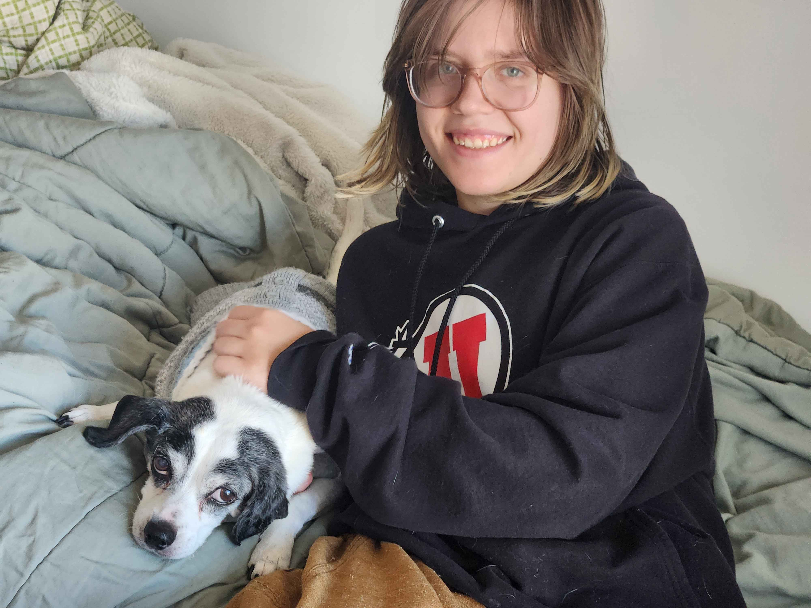
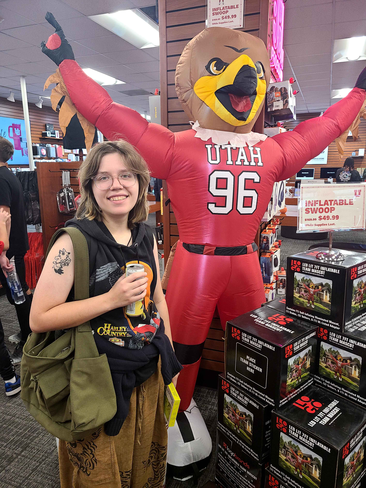
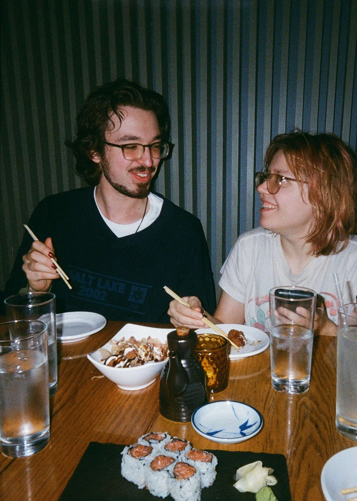
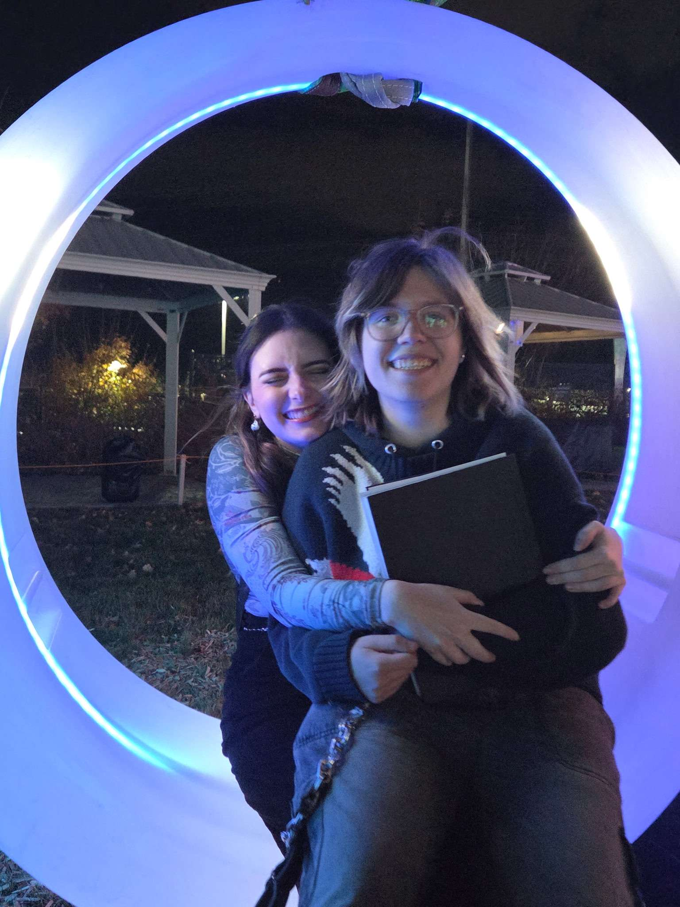
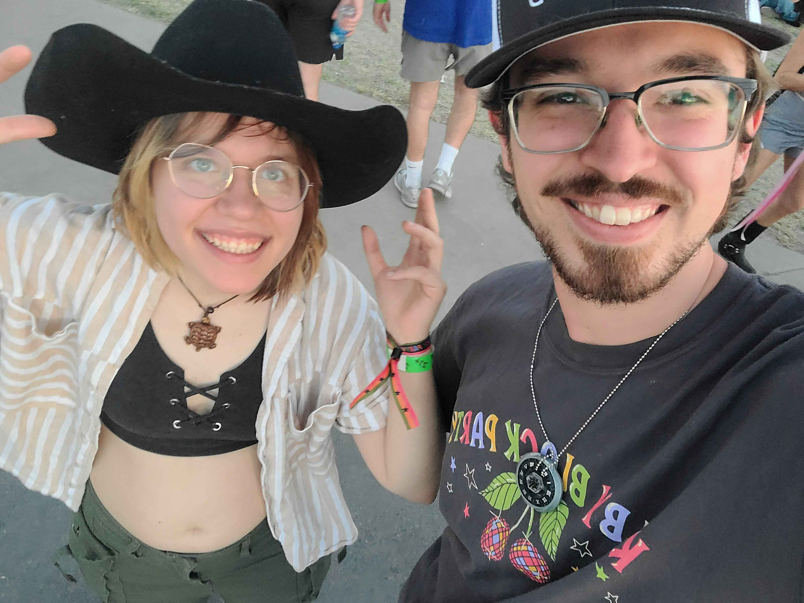
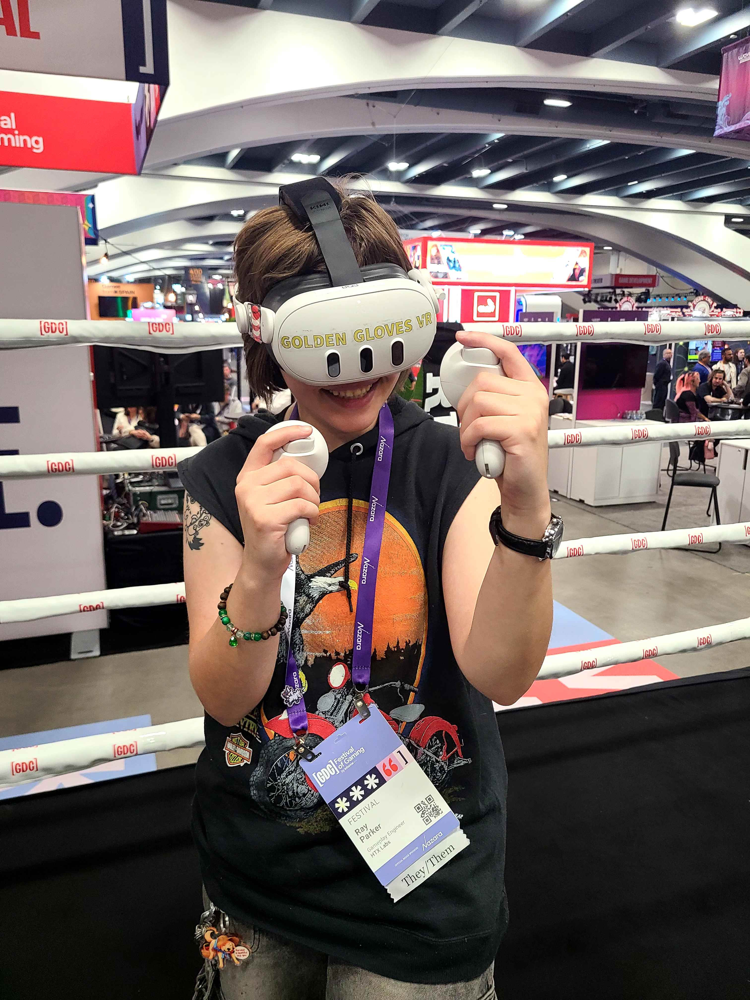
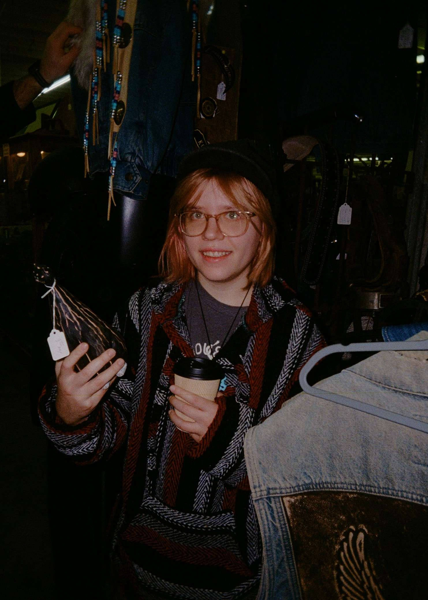
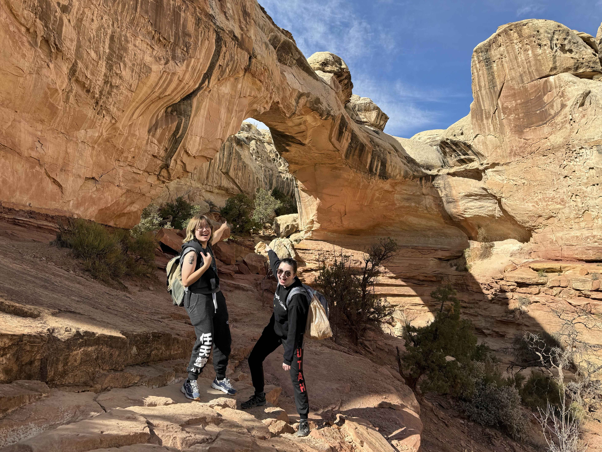
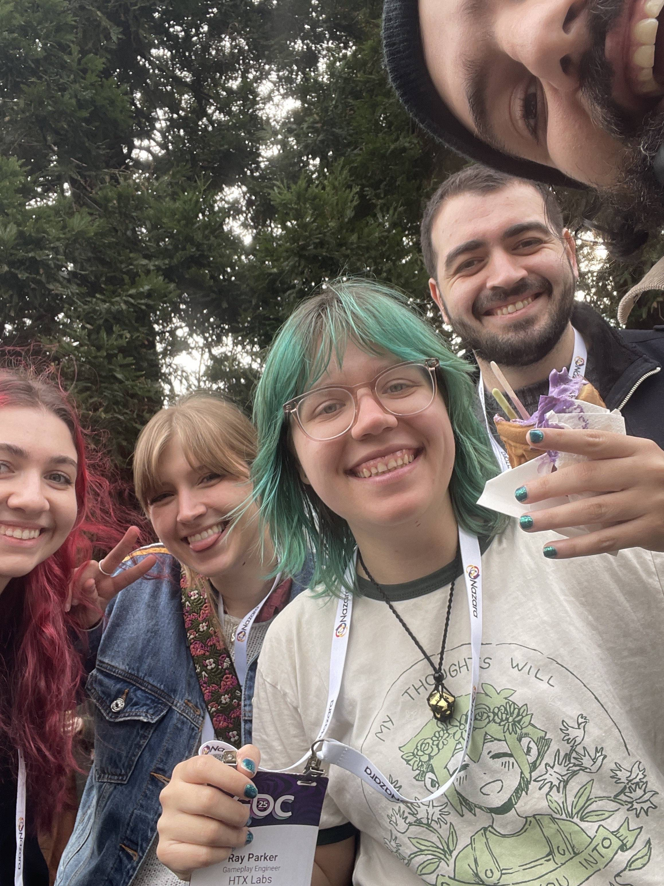

About
howdy!
I am a professional in gameplay engineering and character illustration, but honestly I just enjoy making cool projects with cool people.
Born in Houston, TX; raised and educated in Salt Lake City, UT; and now living in Philadelphia, PA. I graduated from the University of Utah with my Honors Bachelor of Science in Computer Science, with an emphasis in studying and creating Games. I am deeply proud of my technical and artistic background that enables me to create such incredible things.
I have worked in illustration & concept art, 2D & 3D animation, video games, VR/XR simulations, networking systems, web development, sound design, board games, and more. Each medium has their different strengths for storytelling & expression, and there are so many ways we can still combine them. I really enjoy learning and I want to keep making great things.
I am so grateful for my network and community, for where it is and how it'll continue to grow. To be surrounded by such inspiring people, passions, and projects is such a driver to keep creating.
Also, I love my late dog and best furry friend, Harley.

Favorite Game? Pokemon Mystery Dungeon: Explorers of Sky! This game series is over 20 years old, yet its storytelling still holds up to this day with a vibrant fan community. This game is responsible for kickstarting my desire to create cool stories.
Other favorite media? I like atmospheric indie games like Omori, Anthology of the Killer, Outer Wilds, Dredge, Deltarune, and a handful of horror RPGMaker games. Pokemon is a foundational part of my brain and my fascination for funky little creatures. Animated shows are beautiful and amazing, like The Owl House and Rango. I haven't seen a lot of classic films, so I really enjoy watching stuff I haven't seen with my friends.
Other interests? Traveling! Whether to visit faraway friends, experience a new city, explore nature, or attend a concert or convention, I like seeing other parts of the world. I had a parkour group when I lived in SLC and I miss that time greatly. I like visiting different coffee shops, experimenting with my fashion and self-expression, and I really like dogs. Dogs are just awesome.







